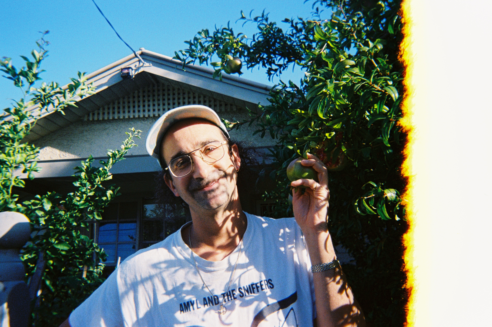

Melbourne-based musician, writer, and artist whose work sits at the intersection of music, performance, and the human mind. Recording and performing as Ferla since 2015. As part of The Toot Toot Toots before that. Published in The Music, Music Feeds, NME Australia, and Triple R. Currently studying clinical psychology — a pursuit that feels less like a career change than a natural extension of questions he's been asking through music for over a decade.
Art music that resists easy categorisation — disco-depresso, crooning sad pop — drawing on baroque influences, synth textures, and lyrics that read as much as they sing. Twice nominated for the Australian Music Prize.
New work in development.
gferla [at] gmail [dot] com